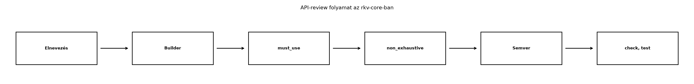

A C++-ban az API tervezését gyakran a fejlécekben deklarált függvénytúlterhelések, az implicit konverziók és a default paraméterek alakítják. A hívó oldal kényelmét szolgálják, de könnyen rejtett költségekhez, félreérthető túlterhelési feloldáshoz vagy véletlen másolásokhoz vezetnek. A Rust ezeket az eszközöket szándékosan elhagyja: nincs függvénytúlterhelés, nincs implicit konverzió, nincs default paraméter. Helyette a nyelv és a közösségi irányelvek explicit, kiszámítható mintákat adnak: konverziós trait-ek, builder típusok, kölcsönzésbarát paraméterek. Ez az alfejezet az rkv-core nyilvános API-ját vizsgálja felül ezen irányelvek szerint, és előkészíti a Záróprojekt: az rkv teljes rendszerként alfejezetet.
Definíció. Az API Guidelines a Rust
közösség által karbantartott, idiomatikus könyvtár-API-kra vonatkozó
ajánlásgyűjtemény. Nem nyelvi szabály, de a cargo
ökoszisztéma, a dokumentáció és a hívók elvárása erre épül. A
legfontosabb területek: elnevezés, konverziók, paramétertípusok,
hibakezelés, jövőbiztosság.
Szabály. Az elnevezési konvenciók: - típusok és
trait-ek: UpperCamelCase (Store,
Storage, IntoIterator); - függvények,
metódusok, változók, modulok, crate-ek: snake_case
(get_value, parse_command); - konstansok és
statikusok: SCREAMING_SNAKE_CASE
(MAX_CAPACITY); - a get_ előtagot kerüljük, ha
a metódus egyszerű mező-hozzáférést ad; a get C++-os
szokás, Rustban inkább key() vagy value()
használatos, a get fenntartott a Option-t
visszaadó indexelésre.
Szabály. A konverziós metódusok előtagjai: -
as_ olcsó, kölcsönzött nézetet ad vissza:
as_str(), as_bytes(), as_ref().
Nem fogyasztja a hívót. - to_ tulajdonjogot adó, gyakran
drágább konverzió: to_string(), to_owned(),
to_vec(). - into_ a hívót elfogyasztó,
tulajdonjogot adó konverzió: into_bytes(),
into_iter(). A C++-ban megszokott
get/to keveréke helyett ez a három előtag
egyértelműen jelzi a költségmodellt.
Definíció. A konverziós trait-ek: -
From<T> for U: párhuzamos az implicit
C++-konverzióval, de explicit hívást igényel (U::from(t)
vagy t.into()). Implementálása nem okozhat hibát és nem
allokálhat indokolatlanul. Ha From<T>-t
implementáljuk, az Into<U> automatikusan
rendelkezésre áll. - AsRef<T>: kölcsönzött
referenciává alakítás olcsón, például String →
&str, Vec<u8> →
&[u8]. Függvényparaméterben
impl AsRef<str> elfogad &str,
String, Cow<str> értékeket is. -
Borrow<T>: hasonló, de elsősorban
gyűjtemény-kulcsokhoz (HashMap-keresés) és a
Cow-hoz; a Borrow<str> a
String-re garantálja, hogy a hash és az egyenlőség
megegyezik.
Szabály. Paramétertípusok: - szöveg esetén
&str, bájtsorozat esetén &[T], hacsak
a függvény nem szerzi meg a tulajdonjogot; - tulajdonjog megszerzésekor
String, Vec<T> vagy
impl Into<String> — ez utóbbi a hívónak rugalmasságot
ad; - az &String és &Vec<T>
paramétert általában kerüljük (a clippy::ptr_arg is ezt
jelzi): az &str és &[T] szigorúan
általánosabb, mert a deref coercion miatt a hívó mindkettőből átadhatja
a sajátját. Ez irányelv, nem nyelvi tiltás, és a célja a hívók
rugalmassága; kivétel, ha a függvénynek a tároló-specifikus API-ra van
szüksége (például s.capacity(), ami a
String-en létezik, a &str-en nem:
fn spare(s: &String) -> usize { s.capacity() - s.len() },
a clippy ezt nem jelzi). A &Option<T> is gyanús,
mert a hívónak Option<&T>-t kellene építenie
(opt.as_ref()), de itt is a hívási minta dönt; -
gyűjteményt fogyasztó függvénynél
impl IntoIterator<Item = T> a legáltalánosabb.
Definíció. A builder minta olyan típus,
amely lépésenként gyűjti a konfigurációt, majd egy build()
metódussal hozza létre a céltípust. Két változata: - consuming
builder: minden setter self-et fogyaszt és
Self-et ad vissza, így láncolható, és a
build(self) az értékeket kimozgathatja (nincs klónozás); a
builder egyszer használható. Ilyen az rkv
ServerConfigBuilder-e; - &mut
builder: a setterek &mut self-et vesznek fel és
&mut Self-et adnak vissza, tehát ez is láncolható, a
builder pedig a build(&self) után újrahasználható;
cserébe a build klónoz, ha nem mozgathat. A standard
könyvtár std::process::Command-ja ilyen:
Command::new("echo").arg("hi").arg("there").output().
Mindkettő idiomatikus; a választás szempontja a használat: az egyszeri
összeállítást a consuming, az újrafelhasznált konfigurációt a
&mut változat szolgálja jobban. A &mut
builderre egy ismert csapda: a
let c = Command::new("echo").arg("x"); nem fordul le
(E0716: temporary value dropped while borrowed), mert az
ideiglenes builder a kifejezés végén megszűnik, miközben c
még kölcsönzi; a láncot egy kifejezésben kell lezárni, vagy a buildert
előbb változóba kell tenni.
Definíció. A #[must_use] attribútum
arra figyelmezteti a hívót, hogy az érték eldobása valószínűleg hiba.
Két helyre tehető, és a kettő különbözik:
Result-ot így jelöli, ezért
minden Result-ot visszaadó függvény eldobott
eredménye külön attribútum nélkül is unused_must_use
figyelmeztetést ad. Az Option típusa viszont
nincs megjelölve, ezért az eldobott Option
csendben marad;Option, bool, Vec, egy tiszta
számítás eredménye), vagy ahol az eldobásnak egyedi magyarázata van:
#[must_use = "indok"].A függvény-attribútum tehát nem a Result védelmét
pótolja, hanem azt, amit a típus nem fed le. A kifejezett eldobás
(let _ = f();) mindkét esetben némán elfogadott.
Definíció. A #[non_exhaustive]
attribútum egy enumon, structon vagy enumvariánson jelzi, hogy a típus a
jövőben új variánsokkal vagy mezőkkel bővülhet. A hatása csak a
más crate-ben lévő kódban érvényesül: ott a
match kötelezően tartalmaz wildcard ágat (_),
és a #[non_exhaustive] struct literállal nem hozható létre.
Ugyanabban a crate-ben a típus kimerítően illeszthető, ezért a
wildcard-kényszer a workspace többi tagját érinti.
Szabály. A szemantikus verziózás (semver)
X.Y.Z alakú verziót használ. A kompatibilitási határ attól
függ, hogy a crate verziója 1.0 vagy afölötti, vagy
0.x:
X.Y.Z, X ≥ 1 |
0.Y.Z |
|
|---|---|---|
| törő változás | X emelése |
Y emelése |
kompatibilis bővítés (új függvény, új típus, új variáns egy
#[non_exhaustive] enumban) |
Y emelése |
Z emelése |
| hibajavítás | Z emelése |
Z emelése |
A Cargo is így értelmezi a ^-kompatibilitást: a
^1.2.3 a 2.0.0-t, a ^0.2.3 a
0.3.0-t zárja ki. Törő változás például egy típus
eltávolítása, a szignatúra megváltoztatása (a visszatérési típus is), és
a #[non_exhaustive] hozzáadása egy már
publikált, kimerítően illeszthető típushoz. Nem törő bővítés viszont egy
már #[non_exhaustive] enum új variánsa. A
cargo-semver-checks eszköz a publikált és az aktuális API
összehasonlításával jelzi a törő változásokat; új trait-implementáció
vagy egy új, alapértelmezett törzsű trait-metódus sem kivétel nélkül
kompatibilis (névütközés, blanket impl ütközés, eddig egyértelmű
metódushívás elromlása); az esetek nem egyszerű táblázat-keresések,
hanem a konkrét hívók függvényei (például a &String →
&str paramétercsere a legtöbb hívónak kompatibilis, a
függvénypointerként használóknak nem).
C++-ban egy függvény rugalmasan fogadhat stringet:
#include <string>
#include <string_view>
void save(const std::string& path) { /* ... */ }
void save(std::string_view path) { /* ... */ }
void save(const char* path) { /* ... */ }A túlterhelések a hívó kényelmét szolgálják, de a három változat
fenntartása ismétlés, és a std::string_view élettartama a
hívó felelőssége. Rustban nincs túlterhelés, ezért a paramétert úgy
választjuk meg, hogy a lehető legtöbb hívási formát elfogadja:
# use std::path::Path;
pub fn save(path: impl AsRef<Path>) -> std::io::Result<()> {
let path = path.as_ref();
// ...
Ok(())
}A hívó átadhat &str-et, String-et,
Path-ot vagy PathBuf-ot, a konverzió explicit
és olcsó. A különbség: a Rust az impl AsRef-fel egyetlen
függvényben fejezi ki azt, amit C++-ban három túlterheléssel kell.
C++-ban az implicit konverzió gyakran meglepi a fejlesztőt:
void process(int value);
process(3.14); // double -> int, esetleg figyelmeztetésselRustban az implicit konverzió nem létezik, a
From/Into explicit:
# fn process(value: i32) {}
# let x = 3.14_f64;
process(x as i32); // explicit cast
process(x.round() as i32);C++-ban a default paramétereket builder minta helyettesíti:
void connect(const std::string& host, int port = 6379, int timeout_ms = 1000);# struct Connection;
# impl Connection {
# fn builder() -> ConnectionBuilder { ConnectionBuilder }
# }
# struct ConnectionBuilder;
# impl ConnectionBuilder {
# fn port(self, port: u16) -> Self { self }
# fn timeout(self, timeout_ms: u64) -> Self { self }
# fn build(self) -> Connection { Connection }
# }
let conn = Connection::builder()
.port(6380)
.timeout(500)
.build();A builder explicit lépésekre bontja a konfigurációt, és a
build() hibát is visszaadhat, ha az állapot
érvénytelen.
Munkakönyvtár: ~/rust-labor/rkv/ — a
workspace. A labor az eddig elkészült kód nyilvános API-ját veszi sorra
az irányelvek szerint; a példák a valódi rkv-core és
rkv-server kódból valók.
Az átvizsgálás három visszatérési szerződést talál a kulcs lekérdezésére, és mindegyiknek más a helyes alakja:
| Típus | Aláírás | Miért |
|---|---|---|
Store, FileStore (tiszta memóriabeli
tábla) |
get(&self, &str) -> Option<&[u8]> |
nincs I/O-hiba, az érték a táblában él: kölcsönzés, nincs másolás |
Storage trait (hibázhat, több implementáció) |
get(&self, &str) -> Result<Option<Vec<u8>>> |
az I/O hibázhat; a trait-objektum mögött a kölcsönzés élettartama nem kifejezhető |
SharedStore (zár mögött) |
get(&self, &str) -> Result<Option<Vec<u8>>> |
a zár elengedése után a hivatkozás érvénytelen volna: owned eredmény kell |
A hiányzó kulcs mindhárom helyen None, nem hiba
(Ok(None)); a KeyNotFound hibát a hídrétegek
(például a cxx-híd) képezik belőle.
A felülvizsgálat eredménye (a labor előtti állapotból):
Store::get és FileStore::get
Option<&Vec<u8>>-t ad: a
&Vec<u8> a tárolás módjához köti a hívót, a
&[u8] nem. Átírjuk
Option<&[u8]>-ra. Ez törő: a
hívók .cloned()-ja és a tesztek
Some(&vec![..]) összehasonlításai nem fordulnak
le.ServerConfig nyilvános mezői és
Default-ja mellé builder kell, amely a
build()-ben ellenőrzi, hogy a korlátok nem nullák (a nulla
max_connections használhatatlan szervert adna).Store::get eredménye nem Result, ezért a
típus nem véd az eldobás ellen; #[must_use] kell rá.Error és a Command bővíthető, ezért
#[non_exhaustive]-re jelöljük. Ez a más crate-beli
match-eket érinti.Elkészített kód — az átírt Store::get
és get_by:
Kódblokk — fájl: rkv-core/src/store/mod.rs ·
művelet: a get és a get_by cseréje ·
ellenőrzés: cargo check -p rkv-core
/// Egy kulcs értékének lekérdezése. `None`, ha nincs ilyen kulcs.
#[must_use = "a keresés eredménye nélkül a hívás hatástalan"]
pub fn get(&self, key: &str) -> Option<&[u8]> {
self.data.get(key).map(Vec::as_slice)
}
/// Kényelmi keresés: a kulcs `&str`, `String`, `&String` vagy `Cow<str>` is lehet.
#[must_use = "a keresés eredménye nélkül a hívás hatástalan"]
pub fn get_by<K: AsRef<str>>(&self, key: K) -> Option<&[u8]> {
self.get(key.as_ref())
}A FileStore::get ugyanígy
Option<&[u8]>-t ad
(self.data.get(key).map(Vec::as_slice)).
A ServerConfig builder az rkv-server-ben. A
setterek #[must_use]-ak, mert a self-et
fogyasztják: az eldobott builder semmit sem állít be.
Kódblokk — fájl: rkv-server/src/lib.rs ·
művelet: új kód a ServerConfig Default
implementációja után · ellenőrzés:
cargo test -p rkv-server --lib config
impl ServerConfig {
/// Builder: csak a megadott korlátok változnak, a többi az alapérték marad.
pub fn builder() -> ServerConfigBuilder {
ServerConfigBuilder::default()
}
}
/// A `ServerConfig` lépésenkénti összeállítása; a `build` ellenőrzi az értékeket.
#[derive(Debug, Default)]
pub struct ServerConfigBuilder {
max_frame: Option<usize>,
max_connections: Option<usize>,
shutdown_grace: Option<Duration>,
}
impl ServerConfigBuilder {
#[must_use]
pub fn max_frame(mut self, bytes: usize) -> Self {
self.max_frame = Some(bytes);
self
}
#[must_use]
pub fn max_connections(mut self, count: usize) -> Self {
self.max_connections = Some(count);
self
}
#[must_use]
pub fn shutdown_grace(mut self, grace: Duration) -> Self {
self.shutdown_grace = Some(grace);
self
}
/// Érvénytelen (nulla) korlátra hibát ad, nem indít használhatatlan szervert.
pub fn build(self) -> Result<ServerConfig, ConfigError> {
let default = ServerConfig::default();
let config = ServerConfig {
max_frame: self.max_frame.unwrap_or(default.max_frame),
max_connections: self.max_connections.unwrap_or(default.max_connections),
shutdown_grace: self.shutdown_grace.unwrap_or(default.shutdown_grace),
};
if config.max_frame == 0 {
return Err(ConfigError::Zero("max_frame"));
}
if config.max_connections == 0 {
return Err(ConfigError::Zero("max_connections"));
}
Ok(config)
}
}
/// A `ServerConfigBuilder::build` hibája.
#[derive(Debug, PartialEq, Eq)]
#[non_exhaustive]
pub enum ConfigError {
/// A megnevezett korlát nulla, ami a szervert használhatatlanná tenné.
Zero(&'static str),
}
impl std::fmt::Display for ConfigError {
fn fmt(&self, f: &mut std::fmt::Formatter<'_>) -> std::fmt::Result {
match self {
ConfigError::Zero(field) => write!(f, "a(z) {field} korlát nem lehet nulla"),
}
}
}
impl std::error::Error for ConfigError {}Munkakönyvtár: ~/rust-labor/rkv/ — a
workspace.
Az ellenőrzőlista:
UpperCamelCase vagy snake_case; nincs
get_ előtag egyszerű mező-hozzáférésnél.&String vagy &Vec<T> paraméter,
mert egyik függvénynek sincs szüksége tároló-specifikus metódusra;
szöveg &str, bájtsorozat &[u8]. A
visszatérésben is &[u8], nem
&Vec<u8>.From/Into
ott, ahol van értelme; AsRef a paraméterekben.build()-ben ellenőrzéssel.#[must_use]: a Result-ot
visszaadó függvények típusuk révén védettek; függvényszintű attribútum a
nem védett típusokra (Option, bool,
builder-Self) és egyedi indoklásra.#[non_exhaustive]: a bővíthető
nyilvános enumokra; a más crate-beli match-ek javítása és
az ismeretlen eset meghatározott kezelése.cargo-semver-checks (publikált crate esetén).Lépések:
rkv-core/src/store/mod.rs-ben és a
file_store.rs-ben cseréljük a get és
get_by visszatérési típusát
Option<&[u8]>-ra a fenti kód szerint, és adjunk
rájuk #[must_use]-t.Kódblokk — fájl: rkv-core/src/storage.rs ·
művelet: a .cloned() hívások cseréje (a
Storage trait owned Vec<u8>-t ad) ·
ellenőrzés: cargo check -p rkv-core
// MemStore és FileStore Storage-implementációja
Ok(MemStore::get(self, key).map(<[u8]>::to_vec))
Ok(FileStore::get(self, key).map(<[u8]>::to_vec))
// a list() szűrőjében
.filter_map(|k| MemStore::get(self, k).map(|v| (k.to_owned(), v.to_vec())))Kódblokk — fájl: rkv-cli/src/main.rs · művelet:
a másolás helyett kölcsönzött UTF-8 ellenőrzés · ellenőrzés:
cargo check -p rkv-cli
Some(bytes) => match std::str::from_utf8(bytes) {
Ok(text) => format!("VALUE {key} {text}"),
Err(_) => format!("ERR value of {key} is not valid UTF-8"),
},A tesztekben az összehasonlítás szeletre vált:
assert_eq!(store.get("kulcs"), Some(&b"ertek"[..])) és
Some(&[1, 9][..]) a korábbi
Some(&b"ertek".to_vec()) helyett (a
rkv-core store/mod.rs és
tests/update_prefix.rs fájljaiban). A
FileStore tesztsegédjében a
store.get(key).cloned()
store.get(key).map(<[u8]>::to_vec) lesz.
ServerConfig::builder()-t a fenti kóddal,
és írjuk meg a két tesztjét (a megadott korlát érvényesül, a többi
alapérték; a nulla korlát hiba).Error enumra és a Command enumra
tegyünk #[non_exhaustive]-t:Kódblokk — fájl: rkv-core/src/error.rs és
rkv-core/src/command.rs · művelet: attribútum a
pub enum Error, illetve a pub enum Command elé
· ellenőrzés: cargo check --workspace --all-targets
#[derive(Debug, Error)]
#[non_exhaustive]
pub enum Error { /* ... */ }#[non_exhaustive] miatt egyetlen külső
match nem fordul le: az rkv-cli
execute függvénye, mert a Command-ot egy másik
crate-ből illeszti. A többi fogyasztó már kezeli a bővíthetőséget: a
rkv-server a store.apply(&command)-ot
hívja (az apply az rkv-core-ban él, ahol a
match kimerítő), az Error illesztései
(rkv-cli) pedig eleve tartalmaznak other =>
ágat. Az ismeretlen (jövőbeli) parancsra határozott választ adunk:Kódblokk — fájl: rkv-cli/src/main.rs · művelet:
új utolsó ág az execute match command
blokkjában · ellenőrzés:
cargo check --workspace --all-targets
// A `Command` `#[non_exhaustive]`: a jövőbeli variánsra határozott válasz jár.
_ => "ERR unsupported command".to_string(),Kódblokk — fájl: terminál (workspace gyökér) · művelet: teljes ellenőrzés · ellenőrzés: nincs hiba és figyelmeztetés
cd ~/rust-labor/rkv
cargo test --workspace
cargo clippy --workspace --all-targets -- -D warningsEllenőrzési pont. A teljes workspace (25
tesztcsomag) zöld és a clippy figyelmeztetés nélkül lefut; a
rkv-server és a rkv-cxx változtatás nélkül
fordul, a rkv-derive által generált match az
rkv-core-on belül kimerítő marad. Az eldobott
Result és a megjelölt Option viselkedése:
Kódblokk — fájl: src/main.rs (önálló projekt) ·
művelet: teljes csere · ellenőrzés: cargo build →
figyelmeztetések a lenti listában
#[derive(Debug)]
struct E;
fn plain() -> Result<(), E> { Ok(()) } // nincs attribútum
#[must_use = "a hiányzó kulcsot kezelni kell"]
fn with_message() -> Result<(), E> { Ok(()) } // egyéni üzenet
fn option() -> Option<u8> { Some(1) } // az Option típusa nem must_use
#[must_use]
fn option_marked() -> Option<u8> { Some(1) }
fn main() {
plain(); // figyelmeztet: unused `Result` that must be used
with_message(); // két figyelmeztetés: a típusé és az egyedi üzenetes függvényé
option(); // NEM figyelmeztet
option_marked(); // figyelmeztet: unused return value of `option_marked`
let _ = plain(); // kifejezett eldobás: nincs figyelmeztetés
}Az ellenőrzött kimenet négy figyelmeztetés: a plain(), a
with_message() (kettő) és az option_marked()
hívásra; az option() és a let _ = nem
figyelmeztet.
Az átdolgozott API-t a Záróprojekt: az rkv teljes rendszerként használja tovább.
Az ábra lépései szövegesen:
&str, &[u8]).ServerConfig builderrel
épül.Command és
Error jelölése.cargo check,
cargo test --workspace, clippy.
&String paraméter a
&str helyett. A C++-ban megszokott
const std::string& mintát sokan
&String-ként ültetik át, de ez feleslegesen szűkíti a
hívót, és a &String dupla indirekciót is jelent. A
&str elfogad String-ből deref koercióval,
és a kölcsönzési szabályok is egyszerűbbek.
unwrap/expect a nyilvános
API-ban. A hívó helyett döntünk a hibáról, és a C++
kivételektől eltérően a panic! a teljes szálat lebontja.
Minden hibát Result-ként adjunk vissza; a
Result típusa már #[must_use], ezért a hívónak
a visszatérési értékkel kezdenie kell valamit (?,
match, let _ = kifejezett eldobás). A
panic! csak invariáns-sértés esetén elfogadható.
A két builder-forma összekeverése. A
&mut self-es builder is láncolható (lásd
Command), nem hibás; az eltérés a költségmodellben van: a
consuming builder egyszer használható és mozgat, a &mut
builder újrahasználható, de a build(&self) klónoz. Hiba
akkor van, ha a &mut builder láncát változóba mentjük
(E0716), vagy ha a consuming builder setterét
#[must_use] nélkül hagyjuk, és az eldobott eredmény
csendben elveszik.
#[non_exhaustive] elhagyása nyilvános
enumoknál. A Command és az Error
bővíthető; ha nem jelöljük, minden új variáns törő változás. A C++-ban
az enum class bővítése is törő lehet, de ott a hiba csendes
(egy switch default nélkül figyelmeztetés), Rustban a
semver ezt explicit módon kezeli. A jelölés utólagos hozzáadása
viszont maga is törő, ezért az első publikálás előtt érdemes
eldönteni.
A #[must_use] felesleges halmozása.
A Result-os függvényekre külön attribútumot tenni zaj; az
attribútumot az Option-t, bool-t vagy tiszta
számítást adó függvényekre és az egyedi indoklásra tartsuk fenn. Ahol az
eldobás legitim (például Store::delete visszaadott régi
értéke), ne jelöljük.
Fogalmi kérdés. Mi a különbség az
as_, to_ és into_ előtagok
között? Adj mindegyikre egy-egy példát a standard könyvtárból, és mondd
meg, melyik mikor allokálhat.
C++-kód átírása. Adott a C++ függvény:
void process(const std::string& name, const std::vector<int>& values);Írd át idiomatikus Rust-függvénnyé, amely nem szerez tulajdonjogot, és magyarázd el a paraméterválasztást.
Implementációs feladat. Bővítsd a
ServerConfigBuilder-t úgy, hogy a build()
elutasítsa a 16 MiB-nál nagyobb max_frame-et is
(ConfigError::TooLarge). Mivel a ConfigError
#[non_exhaustive], a változás kompatibilis: igazold ezt, és
írj tesztet a hibára.
Tervezési döntés. Az rkv-core
Error enumja #[non_exhaustive] lett. Indokold
meg, miért érdemes, és mondd ki, hogy a jelölés hozzáadása és egy új
variáns hozzáadása törő-e a semver szerint 1.x, illetve
0.x verzió esetén. Mit tegyünk, ha a crate még nem
publikált?
Az as_ olcsó, kölcsönzött nézetet ad:
str::as_bytes() → &[u8], nem allokál. A
to_ tulajdonjogot adó, általában allokáló konverzió:
"x".to_string() új String-et hoz létre, másol.
Az into_ a hívót elfogyasztó, tulajdonjogot adó:
String::into_bytes() Vec<u8>-at ad, a
String megsemmisül; nem másol, mert a puffer átkerül az új
tulajdonoshoz.
Az idiomatikus Rust-függvény:
fn process(name: &str, values: &[i32]) {
// ...
}A name &str-ként elfogad
String-ből is deref koercióval, a values
&[i32] pedig Vec<i32>-ből. A
függvény nem szerez tulajdonjogot, a hívó dönt a másolásról.
#[derive(Debug, PartialEq, Eq)]
#[non_exhaustive]
pub enum ConfigError {
Zero(&'static str),
TooLarge(&'static str),
}
const MAX_FRAME_LIMIT: usize = 16 * 1024 * 1024;
// a build()-ben, a nulla-ellenőrzések után
if config.max_frame > MAX_FRAME_LIMIT {
return Err(ConfigError::TooLarge("max_frame"));
}
// a Display-ben új ág
ConfigError::TooLarge(field) => write!(f, "a(z) {field} korlát túl nagy"),Mivel a ConfigError #[non_exhaustive], az
új variáns a más crate-beli hívóknak nem törő: a
match-eknek eleve volt wildcard ágat kellett tartalmazniuk.
A teszt:
ServerConfig::builder().max_frame(MAX_FRAME_LIMIT + 1).build()
→ Err(ConfigError::TooLarge("max_frame")). (A
Display implementáció a crate-ben van, ezért ott a
match kimerítő, és az új ágat fel kell venni.)
Error enum bővíthető (később hálózati hibák,
FFI-hibák), ezért #[non_exhaustive]-re jelöljük. A hatás a
más crate-beli match-ekre vonatkozik, ott wildcard ágat
követel. A semver-hatás:| Változás | 1.x |
0.x |
|---|---|---|
#[non_exhaustive] hozzáadása meglévő enumhoz |
törő: 2.0.0 |
törő: 0.(Y+1).0 |
új variáns egy már #[non_exhaustive] enumban |
kompatibilis: 1.(Y+1).0 |
kompatibilis: 0.Y.(Z+1) |
| új variáns jelölés nélküli enumban | törő | törő |
Ha a crate még nem publikált, a jelölés az első kiadás előtt, verzióemelés nélkül hozzáadható; ez a kiindulópont az rkv-core-ban.
Az rkv-core és az rkv-server nyilvános API-ját az API Guidelines
szerint dolgoztuk át. A kulcs-lekérdezésnek három, egymástól eltérő
szerződése van: a Store/FileStore
get Option<&[u8]>-t ad
kölcsönzéssel, a Storage trait és a
SharedStore
Result<Option<Vec<u8>>>-t owned értékkel,
a hiányzó kulcs mindenhol None/Ok(None). A
ServerConfig builderrel épül, és a build()
ellenőrzi a korlátokat. A #[must_use] a típuson
(Result) és a függvényen különbözik: a Result
típusa már véd, a függvény-attribútum az Option-ra és
egyedi indoklásra való. A Command és az Error
#[non_exhaustive]; ez csak a más crate-beli
match-eket érinti (itt az rkv-cli
execute függvényét, amely az ismeretlen parancsra
ERR unsupported command-ot ad). A semver-határ
1.x és 0.x esetén különbözik.
Továbbvitt eredmény: az átdolgozott
Store::get/FileStore::get
(Option<&[u8]>), a
ServerConfig::builder(), a non_exhaustive
Command/Error és az rkv-server
session modulja a Záróprojekt: az rkv
teljes rendszerként alapja.
cargo test (25 tesztcsomag) és
clippy -D warnings; a migrációs hibák (cloned,
szeletes összehasonlítás, non_exhaustive wildcard); a
must_use figyelmeztetések (négy a lab programjában); a
ServerConfig builder tesztjei.cargo-semver-checks pontos telepítése és
használata a https://crates.io/crates/cargo-semver-checks oldalon
ellenőrizendő, ezt a fejezet nem futtatta.